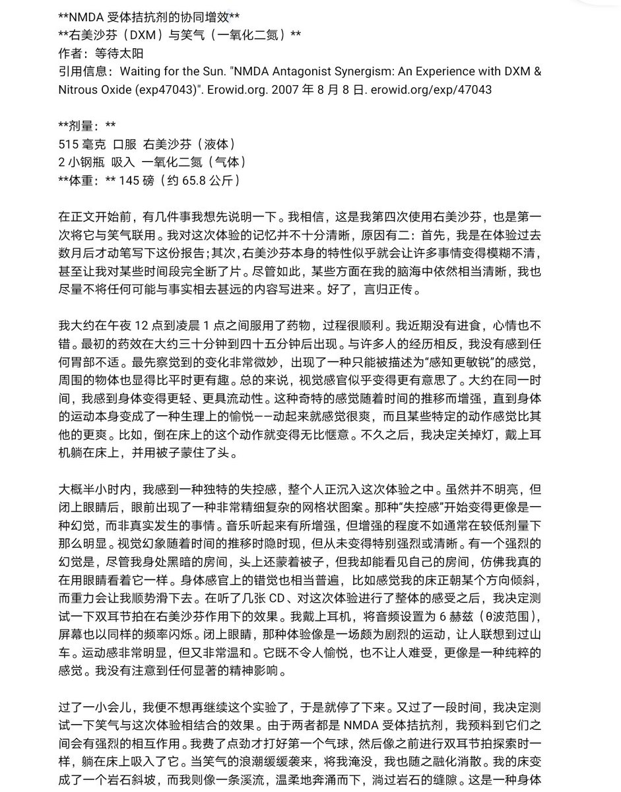
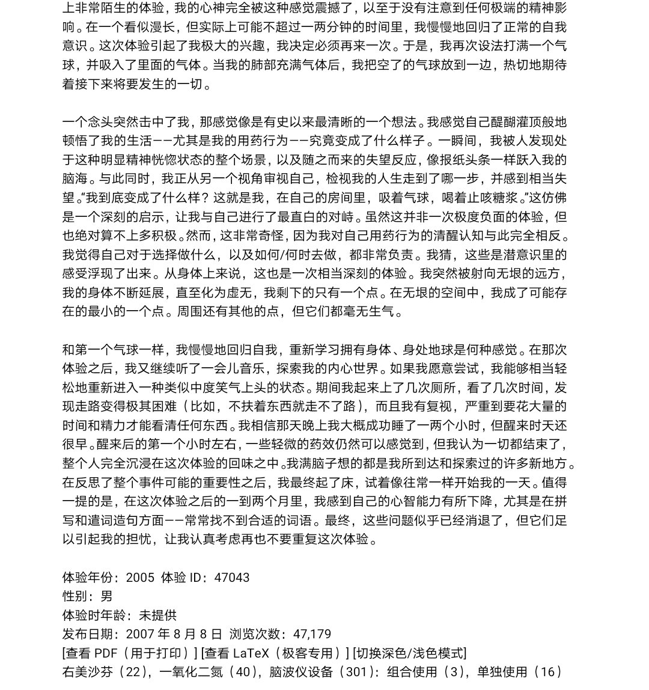
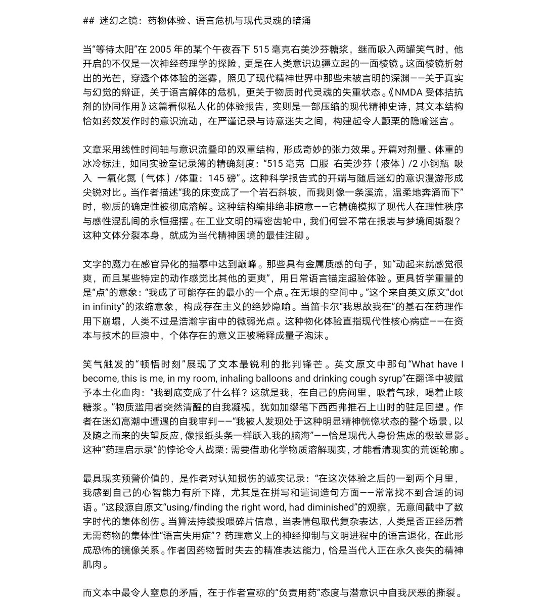
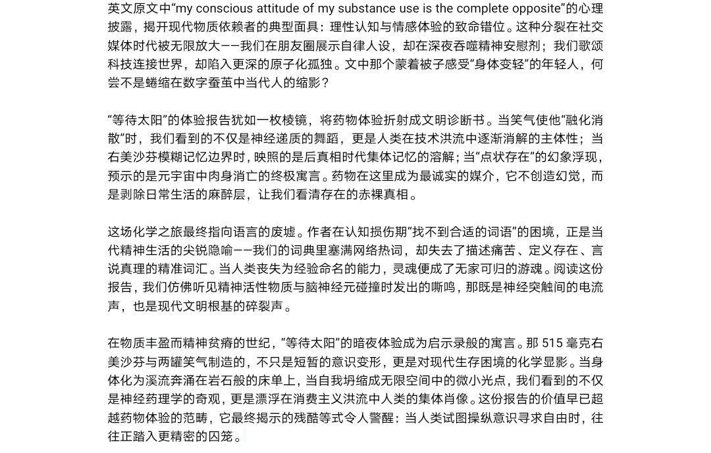

(要是买不到专门的奶油气弹和打气筒的话，可以看看超市里的喷射奶油瓶里有没有氧化亚氮推进剂，如果有的话，配料表上会有写的)
话说deepseek的药物申论真是上头，强烈推荐大家看看，最好学习模仿()
不过deepseek翻译得不咋地，已经换成另一个模型翻译文章了🥺
原文: https://t.co/7jP0rFBsOb

话说deepseek的药物申论真是上头，强烈推荐大家看看，最好学习模仿()
不过deepseek翻译得不咋地，已经换成另一个模型翻译文章了🥺
原文: https://t.co/7jP0rFBsOb




《NMDA拮抗剂协同增效》
“当笑气的浪潮缓缓袭来，将我淹没，我也随之融化消散。我的床变成了一个岩石斜坡，而我则像一条溪流，温柔地奔涌而下，淌过岩石的缝隙。”
窝试过这个组合，联用右美沙芬+笑气可产生极强解离效果🥹
但是鉴于笑气有生理伤害、心理成瘾性强，建议大家严格限制使用笑气的频率🤓☝ https://t.co/MFk9vohV9P
“当笑气的浪潮缓缓袭来，将我淹没，我也随之融化消散。我的床变成了一个岩石斜坡，而我则像一条溪流，温柔地奔涌而下，淌过岩石的缝隙。”
窝试过这个组合，联用右美沙芬+笑气可产生极强解离效果🥹
但是鉴于笑气有生理伤害、心理成瘾性强，建议大家严格限制使用笑气的频率🤓☝ https://t.co/MFk9vohV9P